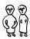

Sunday, August the 29th, 2004
back to: title, date or indexes

Shown above are the twenty six living members of the rather eerie Blot family. Ever since the night of the 1958 Munich Air Disaster, which wiped out the Busby Babes, the curiously ageless Blots have remained within the confines of the converted Pigsty Complex, just off the Blister Lane Bypass, where they forage for food, do meteorological readings, and ponderously intone ponderous incantations. Field recordings of the most ponderous of their incantations, the fourteen-hour Homage à Tippi Hedren, led to a mildly successful CD release. The Blot family are, left to right: Ajax, Blackguard, Cutty, Dismay, Elkan, Fod, Gazeppa, Histamine, Insurgent, Jörg, Kappatatap, Lynyrd, Mote, Nervewrack, Ornamental, Pap, Quinsy, Ringworm, Salman, Tharbin, Ultravox, Vincenzo, Windigo, Xerxes, Yolanda and Zap. Approach them, if you must, with caution, for they are skilful catapultists and have a stockpile of pebbles to ward off strangers.
Hooting Yard on the Air, April the 27th, 2005 : “Anaxagrotax” (starts around 16:44)